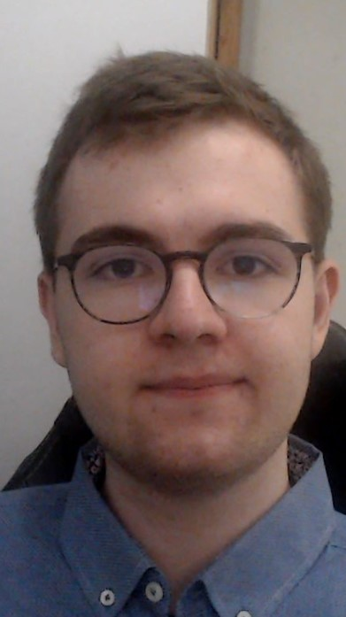

Raphaël Direz

description:
Hello, my name is Raphael Direz, I am actually in information technology DUT in the Gustave Eiffel university. I am a great worker, assiduous and serious. In this project, I was in charge of the HTML.
Idriss bachi

description:
I am actuallly a 1st year studient in information technology DUT of Marne-la-Vallée. I am passionate of informatic, new technologies and video games, but I am also passionate by news, sport, popular culture and the Rubik's cube.
Mixing work and passion make of me someone persistent and attentive because I likewhat I do.
On this project I was in charge of the realisation of contents of history and architecture and also of the english translation.
Clement Duval
description: Hello, my name is Clément Duval and I am a 1st year studient in information technology DUT in the Gustave Eiffel university of Marne-la-Vallée. I am also a passionate of informatics and videos games. I mainly worked on the page setting in CSS.
linkedin:heremail: duval.sch@gmail.com
Alex Baïet

description:
I am Alex BAIET, studient in information technology DUT in the Gustave Eiffel university.
I was in charge of the restaurants and hotels' research part, and also of the Javascript.
mail: alex.baiet3@gmail.com